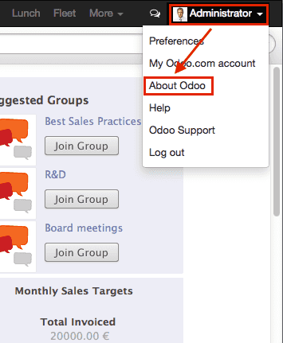

Customizing the web client¶
注釈
this section is really really out of date. It will be updated someday, but meanwhile, this tutorial will probably be frustrating to follow, since it was written a long time ago.
This guide is about creating modules for Odoo's web client.
To create websites with Odoo, see Building a Website; to add business capabilities or extend existing business systems of Odoo, see Building a Module.
警告
This guide assumes knowledge of:
Javascript basics and good practices
It also requires an installed Odoo, and Git.
A Simple Module¶
Let's start with a simple Odoo module holding basic web component configuration and letting us test the web framework.
The example module is available online and can be downloaded using the following command:
$ git clone http://github.com/odoo/petstore
This will create a petstore folder wherever you executed the command.
You then need to add that folder to Odoo's
addons path, create a new database and
install the oepetstore module.
If you browse the petstore folder, you should see the following content:
oepetstore
|-- images
| |-- alligator.jpg
| |-- ball.jpg
| |-- crazy_circle.jpg
| |-- fish.jpg
| `-- mice.jpg
|-- __init__.py
|-- oepetstore.message_of_the_day.csv
|-- __manifest__.py
|-- petstore_data.xml
|-- petstore.py
|-- petstore.xml
`-- static
`-- src
|-- css
| `-- petstore.css
|-- js
| `-- petstore.js
`-- xml
`-- petstore.xml
The module already holds various server customizations. We'll come back to
these later, for now let's focus on the web-related content, in the static
folder.
Files used in the "web" side of an Odoo module must be placed in a static
folder so they are available to a web browser, files outside that folder can
not be fetched by browsers. The src/css, src/js and src/xml
sub-folders are conventional and not strictly necessary.
oepetstore/static/css/petstore.cssCurrently empty, will hold the CSS for pet store content
oepetstore/static/xml/petstore.xmlMostly empty, will hold QWeb Templates templates
oepetstore/static/js/petstore.jsThe most important (and interesting) part, contains the logic of the application (or at least its web-browser side) as javascript. It should currently look like:
odoo.oepetstore = function(instance, local) { var _t = instance.web._t, _lt = instance.web._lt; var QWeb = instance.web.qweb; local.HomePage = instance.Widget.extend({ start: function() { console.log("pet store home page loaded"); }, }); instance.web.client_actions.add( 'petstore.homepage', 'instance.oepetstore.HomePage'); }
Which only prints a small message in the browser's console.
The files in the static folder, need to be defined within the module in order for them to be loaded correctly. Everything in src/xml is defined in __manifest__.py while the contents of src/css and src/js are defined in petstore.xml, or a similar file.
警告
All JavaScript files are concatenated and minified to improve application load time.
One of the drawback is debugging becomes more difficult as individual files disappear and the code is made significantly less readable. It is possible to disable this process by enabling the "developer mode": log into your Odoo instance (user admin password admin by default) open the user menu (in the top-right corner of the Odoo screen) and select About Odoo then Activate the developer mode:

This will reload the web client with optimizations disabled, making development and debugging significantly more comfortable.
Odoo JavaScript Module¶
Javascript doesn't have built-in modules. As a result variables defined in different files are all mashed together and may conflict. This has given rise to various module patterns used to build clean namespaces and limit risks of naming conflicts.
The Odoo framework uses one such pattern to define modules within web addons, in order to both namespace code and correctly order its loading.
oepetstore/static/js/petstore.js contains a module declaration:
odoo.oepetstore = function(instance, local) {
local.xxx = ...;
}
In Odoo web, modules are declared as functions set on the global odoo
variable. The function's name must be the same as the addon (in this case
oepetstore) so the framework can find it, and automatically initialize it.
When the web client loads your module it will call the root function and provide two parameters:
the first parameter is the current instance of the Odoo web client, it gives access to various capabilities defined by the Odoo (translations, network services) as well as objects defined by the core or by other modules.
the second parameter is your own local namespace automatically created by the web client. Objects and variables which should be accessible from outside your module (either because the Odoo web client needs to call them or because others may want to customize them) should be set inside that namespace.
Classes¶
Much as modules, and contrary to most object-oriented languages, javascript does not build in classes1 although it provides roughly equivalent (if lower-level and more verbose) mechanisms.
For simplicity and developer-friendliness Odoo web provides a class system based on John Resig's Simple JavaScript Inheritance.
New classes are defined by calling the extend()
method of odoo.web.Class():
var MyClass = instance.web.Class.extend({
say_hello: function() {
console.log("hello");
},
});
The extend() method takes a dictionary describing
the new class's content (methods and static attributes). In this case, it will
only have a say_hello method which takes no parameters.
Classes are instantiated using the new operator:
var my_object = new MyClass();
my_object.say_hello();
// print "hello" in the console
And attributes of the instance can be accessed via this:
var MyClass = instance.web.Class.extend({
say_hello: function() {
console.log("hello", this.name);
},
});
var my_object = new MyClass();
my_object.name = "Bob";
my_object.say_hello();
// print "hello Bob" in the console
Classes can provide an initializer to perform the initial setup of the
instance, by defining an init() method. The initializer receives the
parameters passed when using the new operator:
var MyClass = instance.web.Class.extend({
init: function(name) {
this.name = name;
},
say_hello: function() {
console.log("hello", this.name);
},
});
var my_object = new MyClass("Bob");
my_object.say_hello();
// print "hello Bob" in the console
It is also possible to create subclasses from existing (used-defined) classes
by calling extend() on the parent class, as is done
to subclass Class():
var MySpanishClass = MyClass.extend({
say_hello: function() {
console.log("hola", this.name);
},
});
var my_object = new MySpanishClass("Bob");
my_object.say_hello();
// print "hola Bob" in the console
When overriding a method using inheritance, you can use this._super() to
call the original method:
var MySpanishClass = MyClass.extend({
say_hello: function() {
this._super();
console.log("translation in Spanish: hola", this.name);
},
});
var my_object = new MySpanishClass("Bob");
my_object.say_hello();
// print "hello Bob \n translation in Spanish: hola Bob" in the console
警告
_super is not a standard method, it is set on-the-fly to the next
method in the current inheritance chain, if any. It is only defined
during the synchronous part of a method call, for use in asynchronous
handlers (after network calls or in setTimeout callbacks) a reference
to its value should be retained, it should not be accessed via this:
// broken, will generate an error
say_hello: function () {
setTimeout(function () {
this._super();
}.bind(this), 0);
}
// correct
say_hello: function () {
// don't forget .bind()
var _super = this._super.bind(this);
setTimeout(function () {
_super();
}.bind(this), 0);
}
Widgets Basics¶
The Odoo web client bundles jQuery for easy DOM manipulation. It is useful and provides a better API than standard W3C DOM2, but insufficient to structure complex applications leading to difficult maintenance.
Much like object-oriented desktop UI toolkits (e.g. Qt, Cocoa or GTK),
Odoo Web makes specific components responsible for sections of a page. In
Odoo web, the base for such components is the Widget()
class, a component specialized in handling a page section and displaying
information for the user.
Your First Widget¶
The initial demonstration module already provides a basic widget:
local.HomePage = instance.Widget.extend({
start: function() {
console.log("pet store home page loaded");
},
});
It extends Widget() and overrides the standard method
start(), which — much like the previous MyClass
— does little for now.
This line at the end of the file:
instance.web.client_actions.add(
'petstore.homepage', 'instance.oepetstore.HomePage');
registers our basic widget as a client action. Client actions will be explained later, for now this is just what allows our widget to be called and displayed when we select the menu.
警告
because the widget will be called from outside our module, the web client needs its "fully qualified" name, not the local version.
Display Content¶
Widgets have a number of methods and features, but the basics are simple:
set up a widget
format the widget's data
display the widget
The HomePage widget already has a start()
method. That method is part of the normal widget lifecycle and automatically
called once the widget is inserted in the page. We can use it to display some
content.
All widgets have a $el which represents the
section of page they're in charge of (as a jQuery object). Widget content
should be inserted there. By default, $el is an
empty <div> element.
A <div> element is usually invisible to the user if it has no content (or
without specific styles giving it a size) which is why nothing is displayed
on the page when HomePage is launched.
Let's add some content to the widget's root element, using jQuery:
local.HomePage = instance.Widget.extend({
start: function() {
this.$el.append("<div>Hello dear Odoo user!</div>");
},
});
That message will now appear when you open
注釈
to refresh the javascript code loaded in Odoo Web, you will need to reload the page. There is no need to restart the Odoo server.
The HomePage widget is used by Odoo Web and managed automatically.
To learn how to use a widget "from scratch" let's create a new one:
local.GreetingsWidget = instance.Widget.extend({
start: function() {
this.$el.append("<div>We are so happy to see you again in this menu!</div>");
},
});
We can now add our GreetingsWidget to the HomePage by using the
GreetingsWidget's appendTo() method:
local.HomePage = instance.Widget.extend({
start: function() {
this.$el.append("<div>Hello dear Odoo user!</div>");
var greeting = new local.GreetingsWidget(this);
return greeting.appendTo(this.$el);
},
});
HomePagefirst adds its own content to its DOM rootHomePagethen instantiatesGreetingsWidgetFinally it tells
GreetingsWidgetwhere to insert itself, delegating part of its$elto theGreetingsWidget.
When the appendTo() method is called, it asks the
widget to insert itself at the specified position and to display its content.
The start() method will be called during the call
to appendTo().
To see what happens under the displayed interface, we will use the browser's
DOM Explorer. But first let's alter our widgets slightly so we can more easily
find where they are, by adding a class to their root elements:
local.HomePage = instance.Widget.extend({
className: 'oe_petstore_homepage',
...
});
local.GreetingsWidget = instance.Widget.extend({
className: 'oe_petstore_greetings',
...
});
If you can find the relevant section of the DOM (right-click on the text then Inspect Element), it should look like this:
<div class="oe_petstore_homepage">
<div>Hello dear Odoo user!</div>
<div class="oe_petstore_greetings">
<div>We are so happy to see you again in this menu!</div>
</div>
</div>
Which clearly shows the two <div> elements automatically created by
Widget(), because we added some classes on them.
We can also see the two message-holding divs we added ourselves
Finally, note the <div class="oe_petstore_greetings"> element which
represents the GreetingsWidget instance is inside the
<div class="oe_petstore_homepage"> which represents the HomePage
instance, since we appended
Widget Parents and Children¶
In the previous part, we instantiated a widget using this syntax:
new local.GreetingsWidget(this);
The first argument is this, which in that case was a HomePage
instance. This tells the widget being created which other widget is its
parent.
As we've seen, widgets are usually inserted in the DOM by another widget and inside that other widget's root element. This means most widgets are "part" of another widget, and exist on behalf of it. We call the container the parent, and the contained widget the child.
Due to multiple technical and conceptual reasons, it is necessary for a widget to know who is its parent and who are its children.
getParent()can be used to get the parent of a widget:
local.GreetingsWidget = instance.Widget.extend({ start: function() { console.log(this.getParent().$el ); // will print "div.oe_petstore_homepage" in the console }, });
getChildren()can be used to get a list of its children:
local.HomePage = instance.Widget.extend({ start: function() { var greeting = new local.GreetingsWidget(this); greeting.appendTo(this.$el); console.log(this.getChildren()[0].$el); // will print "div.oe_petstore_greetings" in the console }, });
When overriding the init() method of a widget it is
of the utmost importance to pass the parent to the this._super() call,
otherwise the relation will not be set up correctly:
local.GreetingsWidget = instance.Widget.extend({
init: function(parent, name) {
this._super(parent);
this.name = name;
},
});
Finally, if a widget does not have a parent (e.g. because it's the root
widget of the application), null can be provided as parent:
new local.GreetingsWidget(null);
Destroying Widgets¶
If you can display content to your users, you should also be able to erase
it. This is done via the destroy() method:
greeting.destroy();
When a widget is destroyed it will first call
destroy() on all its children. Then it erases itself
from the DOM. If you have set up permanent structures in
init() or start() which
must be explicitly cleaned up (because the garbage collector will not handle
them), you can override destroy().
危険
when overriding destroy(), _super()
must always be called otherwise the widget and its children are not
correctly cleaned up leaving possible memory leaks and "phantom events",
even if no error is displayed
The QWeb Template Engine¶
In the previous section we added content to our widgets by directly manipulating (and adding to) their DOM:
this.$el.append("<div>Hello dear Odoo user!</div>");
This allows generating and displaying any type of content, but gets unwieldy when generating significant amounts of DOM (lots of duplication, quoting issues, ...)
As many other environments, Odoo's solution is to use a template engine. Odoo's template engine is called QWeb Templates.
QWeb is an XML-based templating language, similar to Genshi, Thymeleaf or Facelets. It has the following characteristics:
It's implemented fully in JavaScript and rendered in the browser
Each template file (XML files) contains multiple templates
It has special support in Odoo Web's
Widget(), though it can be used outside of Odoo's web client (and it's possible to useWidget()without relying on QWeb)
注釈
The rationale behind using QWeb instead of existing javascript template engines is the extensibility of pre-existing (third-party) templates, much like Odoo views.
Most javascript template engines are text-based which precludes easy structural extensibility where an XML-based templating engine can be generically altered using e.g. XPath or CSS and a tree-alteration DSL (or even just XSLT). This flexibility and extensibility is a core characteristic of Odoo, and losing it was considered unacceptable.
Using QWeb¶
First let's define a simple QWeb template in the almost-empty
oepetstore/static/src/xml/petstore.xml file:
<?xml version="1.0" encoding="UTF-8"?>
<templates xml:space="preserve">
<t t-name="HomePageTemplate">
<div style="background-color: red;">This is some simple HTML</div>
</t>
</templates>
Now we can use this template inside of the HomePage widget. Using the
QWeb loader variable defined at the top of the page, we can call to the
template defined in the XML file:
local.HomePage = instance.Widget.extend({
start: function() {
this.$el.append(QWeb.render("HomePageTemplate"));
},
});
QWeb.render() looks for the specified template, renders it to a string
and returns the result.
However, because Widget() has special integration for QWeb
the template can be set directly on the widget via its
template attribute:
local.HomePage = instance.Widget.extend({
template: "HomePageTemplate",
start: function() {
...
},
});
Although the result looks similar, there are two differences between these usages:
with the second version, the template is rendered right before
start()is calledin the first version the template's content is added to the widget's root element, whereas in the second version the template's root element is directly set as the widget's root element. Which is why the "greetings" sub-widget also gets a red background
警告
templates should have a single non-t root element, especially if
they're set as a widget's template. If there are
multiple "root elements", results are undefined (usually only the first
root element will be used and the others will be ignored)
QWeb Context¶
QWeb templates can be given data and can contain basic display logic.
For explicit calls to QWeb.render(), the template data is passed as
second parameter:
QWeb.render("HomePageTemplate", {name: "Klaus"});
with the template modified to:
<t t-name="HomePageTemplate">
<div>Hello <t t-esc="name"/></div>
</t>
will result in:
<div>Hello Klaus</div>
When using Widget()'s integration it is not possible to
provide additional data to the template. The template will be given a single
widget context variable, referencing the widget being rendered right
before start() is called (the widget's state will
essentially be that set up by init()):
<t t-name="HomePageTemplate">
<div>Hello <t t-esc="widget.name"/></div>
</t>
local.HomePage = instance.Widget.extend({
template: "HomePageTemplate",
init: function(parent) {
this._super(parent);
this.name = "Mordecai";
},
start: function() {
},
});
Result:
<div>Hello Mordecai</div>
Template Declaration¶
We've seen how to render QWeb templates, let's now see the syntax of the templates themselves.
A QWeb template is composed of regular XML mixed with QWeb directives. A
QWeb directive is declared with XML attributes starting with t-.
The most basic directive is t-name, used to declare new templates in
a template file:
<templates>
<t t-name="HomePageTemplate">
<div>This is some simple HTML</div>
</t>
</templates>
t-name takes the name of the template being defined, and declares that
it can be called using QWeb.render(). It can only be used at the
top-level of a template file.
Escaping¶
The t-esc directive can be used to output text:
<div>Hello <t t-esc="name"/></div>
It takes a Javascript expression which is evaluated, the result of the expression is then HTML-escaped and inserted in the document. Since it's an expression it's possible to provide just a variable name as above, or a more complex expression like a computation:
<div><t t-esc="3+5"/></div>
or method calls:
<div><t t-esc="name.toUpperCase()"/></div>
Outputting HTML¶
To inject HTML in the page being rendered, use t-raw. Like t-esc it
takes an arbitrary Javascript expression as parameter, but it does not
perform an HTML-escape step.
<div><t t-raw="name.link(user_account)"/></div>
危険
t-raw must not be used on any data which may contain non-escaped
user-provided content as this leads to cross-site scripting
vulnerabilities
Conditionals¶
QWeb can have conditional blocks using t-if. The directive takes an
arbitrary expression, if the expression is falsy (false, null, 0
or an empty string) the whole block is suppressed, otherwise it is displayed.
<div>
<t t-if="true == true">
true is true
</t>
<t t-if="true == false">
true is not true
</t>
</div>
注釈
QWeb doesn't have an "else" structure, use a second t-if with the
original condition inverted. You may want to store the condition in a
local variable if it's a complex or expensive expression.
Iteration¶
To iterate on a list, use t-foreach and t-as. t-foreach takes an
expression returning a list to iterate on t-as takes a variable name to
bind to each item during iteration.
<div>
<t t-foreach="names" t-as="name">
<div>
Hello <t t-esc="name"/>
</div>
</t>
</div>
注釈
t-foreach can also be used with numbers and objects
(dictionaries)
Defining attributes¶
QWeb provides two related directives to define computed attributes:
t-att-name and t-attf-name. In either case, name is the
name of the attribute to create (e.g. t-att-id defines the attribute
id after rendering).
t-att- takes a javascript expression whose result is set as the
attribute's value, it is most useful if all of the attribute's value is
computed:
<div>
Input your name:
<input type="text" t-att-value="defaultName"/>
</div>
t-attf- takes a format string. A format string is literal text with
interpolation blocks inside, an interpolation block is a javascript
expression between {{ and }}, which will be replaced by the result
of the expression. It is most useful for attributes which are partially
literal and partially computed such as a class:
<div t-attf-class="container {{ left ? 'text-left' : '' }} {{ extra_class }}">
insert content here
</div>
Calling other templates¶
Templates can be split into sub-templates (for simplicity, maintainability, reusability or to avoid excessive markup nesting).
This is done using the t-call directive, which takes the name of the
template to render:
<t t-name="A">
<div class="i-am-a">
<t t-call="B"/>
</div>
</t>
<t t-name="B">
<div class="i-am-b"/>
</t>
rendering the A template will result in:
<div class="i-am-a">
<div class="i-am-b"/>
</div>
Sub-templates inherit the rendering context of their caller.
To Learn More About QWeb¶
For a QWeb reference, see QWeb Templates.
Exercise¶
Exercise
Usage of QWeb in Widgets
Create a widget whose constructor takes two parameters aside from
parent: product_names and color.
product_namesshould an array of strings, each one the name of a productcoloris a string containing a color in CSS color format (ie:#000000for black).
The widget should display the given product names one under the other,
each one in a separate box with a background color with the value of
color and a border. You should use QWeb to render the HTML. Any
necessary CSS should be in oepetstore/static/src/css/petstore.css.
Use the widget in HomePage with half a dozen products.
Widget Helpers¶
Widget's jQuery Selector¶
Selecting DOM elements within a widget can be performed by calling the
find() method on the widget's DOM root:
this.$el.find("input.my_input")...
But because it's a common operation, Widget() provides an
equivalent shortcut through the $() method:
local.MyWidget = instance.Widget.extend({
start: function() {
this.$("input.my_input")...
},
});
警告
The global jQuery function $() should never be used unless it is
absolutely necessary: selection on a widget's root are scoped to the
widget and local to it, but selections with $() are global to the
page/application and may match parts of other widgets and views, leading
to odd or dangerous side-effects. Since a widget should generally act
only on the DOM section it owns, there is no cause for global selection.
Easier DOM Events Binding¶
We have previously bound DOM events using normal jQuery event handlers (e.g.
.click() or .change()) on widget elements:
local.MyWidget = instance.Widget.extend({
start: function() {
var self = this;
this.$(".my_button").click(function() {
self.button_clicked();
});
},
button_clicked: function() {
..
},
});
While this works it has a few issues:
it is rather verbose
it does not support replacing the widget's root element at runtime as the binding is only performed when
start()is run (during widget initialization)it requires dealing with
this-binding issues
Widgets thus provide a shortcut to DOM event binding via
events:
local.MyWidget = instance.Widget.extend({
events: {
"click .my_button": "button_clicked",
},
button_clicked: function() {
..
}
});
events is an object (mapping) of an event to the
function or method to call when the event is triggered:
the key is an event name, possibly refined with a CSS selector in which case only if the event happens on a selected sub-element will the function or method run:
clickwill handle all clicks within the widget, butclick .my_buttonwill only handle clicks in elements bearing themy_buttonclassthe value is the action to perform when the event is triggered
It can be either a function:
events: { 'click': function (e) { /* code here */ } }
or the name of a method on the object (see example above).
In either case, the
thisis the widget instance and the handler is given a single parameter, the jQuery event object for the event.
Widget Events and Properties¶
Events¶
Widgets provide an event system (separate from the DOM/jQuery event system described above): a widget can fire events on itself, and other widgets (or itself) can bind themselves and listen for these events:
local.ConfirmWidget = instance.Widget.extend({
events: {
'click button.ok_button': function () {
this.trigger('user_chose', true);
},
'click button.cancel_button': function () {
this.trigger('user_chose', false);
}
},
start: function() {
this.$el.append("<div>Are you sure you want to perform this action?</div>" +
"<button class='ok_button'>Ok</button>" +
"<button class='cancel_button'>Cancel</button>");
},
});
This widget acts as a facade, transforming user input (through DOM events) into a documentable internal event to which parent widgets can bind themselves.
trigger() takes the name of the event to trigger as
its first (mandatory) argument, any further arguments are treated as event
data and passed directly to listeners.
We can then set up a parent event instantiating our generic widget and
listening to the user_chose event using on():
local.HomePage = instance.Widget.extend({
start: function() {
var widget = new local.ConfirmWidget(this);
widget.on("user_chose", this, this.user_chose);
widget.appendTo(this.$el);
},
user_chose: function(confirm) {
if (confirm) {
console.log("The user agreed to continue");
} else {
console.log("The user refused to continue");
}
},
});
on() binds a function to be called when the
event identified by event_name is. The func argument is the
function to call and object is the object to which that function is
related if it is a method. The bound function will be called with the
additional arguments of trigger() if it has
any. Example:
start: function() {
var widget = ...
widget.on("my_event", this, this.my_event_triggered);
widget.trigger("my_event", 1, 2, 3);
},
my_event_triggered: function(a, b, c) {
console.log(a, b, c);
// will print "1 2 3"
}
注釈
Triggering events on an other widget is generally a bad idea. The main
exception to that rule is odoo.web.bus which exists specifically
to broadcasts evens in which any widget could be interested throughout
the Odoo web application.
Properties¶
Properties are very similar to normal object attributes in that they allow storing data on a widget instance, however they have the additional feature that they trigger events when set:
start: function() {
this.widget = ...
this.widget.on("change:name", this, this.name_changed);
this.widget.set("name", "Nicolas");
},
name_changed: function() {
console.log("The new value of the property 'name' is", this.widget.get("name"));
}
set()sets the value of a property and triggerschange:propname(where propname is the property name passed as first parameter toset()) andchangeget()retrieves the value of a property.
Exercise¶
Exercise
Widget Properties and Events
Create a widget ColorInputWidget that will display 3 <input
type="text">. Each of these <input> is dedicated to type a
hexadecimal number from 00 to FF. When any of these <input> is
modified by the user the widget must query the content of the three
<input>, concatenate their values to have a complete CSS color code
(ie: #00FF00) and put the result in a property named color. Please
note the jQuery change() event that you can bind on any HTML
<input> element and the val() method that can query the current
value of that <input> could be useful to you for this exercise.
Then, modify the HomePage widget to instantiate ColorInputWidget
and display it. The HomePage widget should also display an empty
rectangle. That rectangle must always, at any moment, have the same
background color as the color in the color property of the
ColorInputWidget instance.
Use QWeb to generate all HTML.
Modify existing widgets and classes¶
The class system of the Odoo web framework allows direct modification of
existing classes using the include() method:
var TestClass = instance.web.Class.extend({
testMethod: function() {
return "hello";
},
});
TestClass.include({
testMethod: function() {
return this._super() + " world";
},
});
console.log(new TestClass().testMethod());
// will print "hello world"
This system is similar to the inheritance mechanism, except it will alter the target class in-place instead of creating a new class.
In that case, this._super() will call the original implementation of a
method being replaced/redefined. If the class already had sub-classes, all
calls to this._super() in sub-classes will call the new implementations
defined in the call to include(). This will also work
if some instances of the class (or of any of its sub-classes) were created
prior to the call to include().
Translations¶
The process to translate text in Python and JavaScript code is very
similar. You could have noticed these lines at the beginning of the
petstore.js file:
var _t = instance.web._t,
_lt = instance.web._lt;
These lines are simply used to import the translation functions in the current JavaScript module. They are used thus:
this.$el.text(_t("Hello user!"));
In Odoo, translations files are automatically generated by scanning the source
code. All piece of code that calls a certain function are detected and their
content is added to a translation file that will then be sent to the
translators. In Python, the function is _(). In JavaScript the function is
_t() (and also _lt()).
_t() will return the translation defined for the text it is given. If no
translation is defined for that text, it will return the original text as-is.
注釈
To inject user-provided values in translatable strings, it is recommended to use _.str.sprintf with named arguments after the translation:
this.$el.text(_.str.sprintf(
_t("Hello, %(user)s!"), {
user: "Ed"
}));
This makes translatable strings more readable to translators, and gives them more flexibility to reorder or ignore parameters.
_lt() ("lazy translate") is similar but somewhat more
complex: instead of translating its parameter immediately, it returns
an object which, when converted to a string, will perform the translation.
It is used to define translatable terms before the translations system is initialized, for class attributes for instance (as modules are loaded before the user's language is configured and translations are downloaded).
Communication with the Odoo Server¶
Contacting Models¶
Most operations with Odoo involve communicating with models implementing business concern, these models will then (potentially) interact with some storage engine (usually PostgreSQL).
Although jQuery provides a $.ajax function for network interactions, communicating with Odoo requires additional metadata whose setup before every call would be verbose and error-prone. As a result, Odoo web provides higher-level communication primitives.
To demonstrate this, the file petstore.py already contains a small model
with a sample method:
class message_of_the_day(models.Model):
_name = "oepetstore.message_of_the_day"
@api.model
def my_method(self):
return {"hello": "world"}
message = fields.Text(),
color = fields.Char(size=20),
This declares a model with two fields, and a method my_method() which
returns a literal dictionary.
Here is a sample widget that calls my_method() and displays the result:
local.HomePage = instance.Widget.extend({
start: function() {
var self = this;
var model = new instance.web.Model("oepetstore.message_of_the_day");
model.call("my_method", {context: new instance.web.CompoundContext()}).then(function(result) {
self.$el.append("<div>Hello " + result["hello"] + "</div>");
// will show "Hello world" to the user
});
},
});
The class used to call Odoo models is odoo.Model(). It is
instantiated with the Odoo model's name as first parameter
(oepetstore.message_of_the_day here).
call() can be used to call any (public) method of an
Odoo model. It takes the following positional arguments:
nameThe name of the method to call,
my_methodhereargsan array of positional arguments to provide to the method. Because the example has no positional argument to provide, the
argsparameter is not provided.Here is an other example with positional arguments:
@api.model def my_method2(self, a, b, c): ...
model.call("my_method", [1, 2, 3], ... // with this a=1, b=2 and c=3
kwargsa mapping of keyword arguments to pass. The example provides a single named argument
context.@api.model def my_method2(self, a, b, c): ...
model.call("my_method", [], {a: 1, b: 2, c: 3, ... // with this a=1, b=2 and c=3
call() returns a deferred resolved with the value
returned by the model's method as first argument.
CompoundContext¶
The previous section used a context argument which was not explained in
the method call:
model.call("my_method", {context: new instance.web.CompoundContext()})
The context is like a "magic" argument that the web client will always give to the server when calling a method. The context is a dictionary containing multiple keys. One of the most important key is the language of the user, used by the server to translate all the messages of the application. Another one is the time zone of the user, used to compute correctly dates and times if Odoo is used by people in different countries.
The argument is necessary in all methods, otherwise bad things could
happen (such as the application not being translated correctly). That's why,
when you call a model's method, you should always provide that argument. The
solution to achieve that is to use odoo.web.CompoundContext().
CompoundContext() is a class used to pass the user's
context (with language, time zone, etc...) to the server as well as adding new
keys to the context (some models' methods use arbitrary keys added to the
context). It is created by giving to its constructor any number of
dictionaries or other CompoundContext() instances. It will
merge all those contexts before sending them to the server.
model.call("my_method", {context: new instance.web.CompoundContext({'new_key': 'key_value'})})
@api.model
def my_method(self):
print self.env.context
// will print: {'lang': 'en_US', 'new_key': 'key_value', 'tz': 'Europe/Brussels', 'uid': 1}
You can see the dictionary in the argument context contains some keys that
are related to the configuration of the current user in Odoo plus the
new_key key that was added when instantiating
CompoundContext().
Queries¶
While call() is sufficient for any interaction with Odoo
models, Odoo Web provides a helper for simpler and clearer querying of models
(fetching of records based on various conditions):
query() which acts as a shortcut for the common
combination of search() and
:read(). It provides a clearer syntax to search
and read models:
model.query(['name', 'login', 'user_email', 'signature'])
.filter([['active', '=', true], ['company_id', '=', main_company]])
.limit(15)
.all().then(function (users) {
// do work with users records
});
versus:
model.call('search', [['active', '=', true], ['company_id', '=', main_company]], {limit: 15})
.then(function (ids) {
return model.call('read', [ids, ['name', 'login', 'user_email', 'signature']]);
})
.then(function (users) {
// do work with users records
});
query()takes an optional list of fields as parameter (if no field is provided, all fields of the model are fetched). It returns aodoo.web.Query()which can be further customized before being executedQuery()represents the query being built. It is immutable, methods to customize the query actually return a modified copy, so it's possible to use the original and the new version side-by-side. SeeQuery()for its customization options.
When the query is set up as desired, simply call
all() to execute it and return a
deferred to its result. The result is the same as
read()'s, an array of dictionaries where each
dictionary is a requested record, with each requested field a dictionary key.
Exercises¶
Exercise
Message of the Day
Create a MessageOfTheDay widget displaying the last record of the
oepetstore.message_of_the_day model. The widget should fetch its
record as soon as it is displayed.
Display the widget in the Pet Store home page.
Exercise
Pet Toys List
Create a PetToysList widget displaying 5 toys (using their name and
their images).
The pet toys are not stored in a new model, instead they're stored in
product.product using a special category Pet Toys. You can see the
pre-generated toys and add new ones by going to
. You will probably
need to explore product.product to create the right domain to
select just pet toys.
In Odoo, images are generally stored in regular fields encoded as
base64, HTML supports displaying images straight from base64 with
<img src="data:mime_type;base64,base64_image_data"/>
The PetToysList widget should be displayed on the home page on the
right of the MessageOfTheDay widget. You will need to make some layout
with CSS to achieve this.
Existing web components¶
The Action Manager¶
In Odoo, many operations start from an action: opening a menu item (to a view), printing a report, ...
Actions are pieces of data describing how a client should react to the activation of a piece of content. Actions can be stored (and read through a model) or they can be generated on-the fly (locally to the client by javascript code, or remotely by a method of a model).
In Odoo Web, the component responsible for handling and reacting to these actions is the Action Manager.
Using the Action Manager¶
The action manager can be invoked explicitly from javascript code by creating a dictionary describing an action of the right type, and calling an action manager instance with it.
do_action() is a shortcut of Widget()
looking up the "current" action manager and executing the action:
instance.web.TestWidget = instance.Widget.extend({
dispatch_to_new_action: function() {
this.do_action({
type: 'ir.actions.act_window',
res_model: "product.product",
res_id: 1,
views: [[false, 'form']],
target: 'current',
context: {},
});
},
});
The most common action type is ir.actions.act_window which provides
views to a model (displays a model in various manners), its most common
attributes are:
res_modelThe model to display in views
res_id(optional)For form views, a preselected record in
res_modelviewsLists the views available through the action. A list of
[view_id, view_type],view_idcan either be the database identifier of a view of the right type, orfalseto use the view by default for the specified type. View types can not be present multiple times. The action will open the first view of the list by default.targetEither
current(the default) which replaces the "content" section of the web client by the action, ornewto open the action in a dialog box.contextAdditional context data to use within the action.
Exercise
Jump to Product
Modify the PetToysList component so clicking on a toy replaces the
homepage by the toy's form view.
Client Actions¶
Throughout this guide, we used a simple HomePage widget which the web
client automatically starts when we select the right menu item. But how did
the Odoo web know to start this widget? Because the widget is registered as
a client action.
A client action is (as its name implies) an action type defined almost entirely in the client, in javascript for Odoo web. The server simply sends an action tag (an arbitrary name), and optionally adds a few parameters, but beyond that everything is handled by custom client code.
Our widget is registered as the handler for the client action through this:
instance.web.client_actions.add('petstore.homepage', 'instance.oepetstore.HomePage');
instance.web.client_actions is a Registry() in which
the action manager looks up client action handlers when it needs to execute
one. The first parameter of add() is the name
(tag) of the client action, and the second parameter is the path to the widget
from the Odoo web client root.
When a client action must be executed, the action manager looks up its tag in the registry, walks the specified path and displays the widget it finds at the end.
注釈
a client action handler can also be a regular function, in which case it'll be called and its result (if any) will be interpreted as the next action to execute.
On the server side, we had simply defined an ir.actions.client action:
<record id="action_home_page" model="ir.actions.client">
<field name="tag">petstore.homepage</field>
</record>
and a menu opening the action:
<menuitem id="home_page_petstore_menu" parent="petstore_menu"
name="Home Page" action="action_home_page"/>
Architecture of the Views¶
Much of Odoo web's usefulness (and complexity) resides in views. Each view type is a way of displaying a model in the client.
The View Manager¶
When an ActionManager instance receive an action of type
ir.actions.act_window, it delegates the synchronization and handling of
the views themselves to a view manager, which will then set up one or
multiple views depending on the original action's requirements:
The Views¶
Most Odoo views are implemented through a subclass
of odoo.web.View() which provides a bit of generic basic structure
for handling events and displaying model information.
The search view is considered a view type by the main Odoo framework, but handled separately by the web client (as it's a more permanent fixture and can interact with other views, which regular views don't do).
A view is responsible for loading its own description XML (using
fields_view_get) and any other data source
it needs. To that purpose, views are provided with an optional view
identifier set as the view_id attribute.
Views are also provided with a DataSet() instance which
holds most necessary model information (the model name and possibly various
record ids).
Views may also want to handle search queries by overriding
do_search(), and updating their
DataSet() as necessary.
The Form View Fields¶
A common need is the extension of the web form view to add new ways of displaying fields.
All built-in fields have a default display implementation, a new
form widget may be necessary to correctly interact with a new field type
(e.g. a GIS field) or to provide new representations and ways to
interact with existing field types (e.g. validate
Char fields which should contain email addresses
and display them as email links).
To explicitly specify which form widget should be used to display a field,
simply use the widget attribute in the view's XML description:
<field name="contact_mail" widget="email"/>
注釈
the same widget is used in both "view" (read-only) and "edit" modes of a form view, it's not possible to use a widget in one and an other widget in the other
and a given field (name) can not be used multiple times in the same form
a widget may ignore the current mode of the form view and remain the same in both view and edit modes
Fields are instantiated by the form view after it has read its XML description
and constructed the corresponding HTML representing that description. After
that, the form view will communicate with the field objects using some
methods. These methods are defined by the FieldInterface
interface. Almost all fields inherit the AbstractField abstract
class. That class defines some default mechanisms that need to be implemented
by most fields.
Here are some of the responsibilities of a field class:
The field class must display and allow the user to edit the value of the field.
It must correctly implement the 3 field attributes available in all fields of Odoo. The
AbstractFieldclass already implements an algorithm that dynamically calculates the value of these attributes (they can change at any moment because their value change according to the value of other fields). Their values are stored in Widget Properties (the widget properties were explained earlier in this guide). It is the responsibility of each field class to check these widget properties and dynamically adapt depending of their values. Here is a description of each of these attributes:required: The field must have a value before saving. Ifrequiredistrueand the field doesn't have a value, the methodis_valid()of the field must returnfalse.invisible: When this istrue, the field must be invisible. TheAbstractFieldclass already has a basic implementation of this behavior that fits most fields.readonly: Whentrue, the field must not be editable by the user. Most fields in Odoo have a completely different behavior depending on the value ofreadonly. As example, theFieldChardisplays an HTML<input>when it is editable and simply displays the text when it is read-only. This also means it has much more code it would need to implement only one behavior, but this is necessary to ensure a good user experience.
Fields have two methods,
set_value()andget_value(), which are called by the form view to give it the value to display and get back the new value entered by the user. These methods must be able to handle the value as given by the Odoo server when aread()is performed on a model and give back a valid value for awrite(). Remember that the JavaScript/Python data types used to represent the values given byread()and given towrite()is not necessarily the same in Odoo. As example, when you read a many2one, it is always a tuple whose first value is the id of the pointed record and the second one is the name get (ie:(15, "Agrolait")). But when you write a many2one it must be a single integer, not a tuple anymore.AbstractFieldhas a default implementation of these methods that works well for simple data type and set a widget property namedvalue.
Please note that, to better understand how to implement fields, you are
strongly encouraged to look at the definition of the FieldInterface
interface and the AbstractField class directly in the code of the Odoo web
client.
Creating a New Type of Field¶
In this part we will explain how to create a new type of field. The example
here will be to re-implement the FieldChar class and progressively explain
each part.
Simple Read-Only Field¶
Here is a first implementation that will only display text. The user will not be able to modify the content of the field.
local.FieldChar2 = instance.web.form.AbstractField.extend({
init: function() {
this._super.apply(this, arguments);
this.set("value", "");
},
render_value: function() {
this.$el.text(this.get("value"));
},
});
instance.web.form.widgets.add('char2', 'instance.oepetstore.FieldChar2');
In this example, we declare a class named FieldChar2 inheriting from
AbstractField. We also register this class in the registry
instance.web.form.widgets under the key char2. That will allow us to
use this new field in any form view by specifying widget="char2" in the
<field/> tag in the XML declaration of the view.
In this example, we define a single method: render_value(). All it does is
display the widget property value. Those are two tools defined by the
AbstractField class. As explained before, the form view will call the
method set_value() of the field to set the value to display. This method
already has a default implementation in AbstractField which simply sets
the widget property value. AbstractField also watch the
change:value event on itself and calls the render_value() when it
occurs. So, render_value() is a convenience method to implement in child
classes to perform some operation each time the value of the field changes.
In the init() method, we also define the default value of the field if
none is specified by the form view (here we assume the default value of a
char field should be an empty string).
Read-Write Field¶
Read-only fields, which only display content and don't allow the user to modify it can be useful, but most fields in Odoo also allow editing. This makes the field classes more complicated, mostly because fields are supposed to handle both editable and non-editable mode, those modes are often completely different (for design and usability purpose) and the fields must be able to switch between modes at any moment.
To know in which mode the current field should be, the AbstractField class
sets a widget property named effective_readonly. The field should watch
for changes in that widget property and display the correct mode
accordingly. Example:
local.FieldChar2 = instance.web.form.AbstractField.extend({
init: function() {
this._super.apply(this, arguments);
this.set("value", "");
},
start: function() {
this.on("change:effective_readonly", this, function() {
this.display_field();
this.render_value();
});
this.display_field();
return this._super();
},
display_field: function() {
var self = this;
this.$el.html(QWeb.render("FieldChar2", {widget: this}));
if (! this.get("effective_readonly")) {
this.$("input").change(function() {
self.internal_set_value(self.$("input").val());
});
}
},
render_value: function() {
if (this.get("effective_readonly")) {
this.$el.text(this.get("value"));
} else {
this.$("input").val(this.get("value"));
}
},
});
instance.web.form.widgets.add('char2', 'instance.oepetstore.FieldChar2');
<t t-name="FieldChar2">
<div class="oe_field_char2">
<t t-if="! widget.get('effective_readonly')">
<input type="text"></input>
</t>
</div>
</t>
In the start() method (which is called immediately after a widget has been
appended to the DOM), we bind on the event change:effective_readonly. That
allows us to redisplay the field each time the widget property
effective_readonly changes. This event handler will call
display_field(), which is also called directly in start(). This
display_field() was created specifically for this field, it's not a method
defined in AbstractField or any other class. We can use this method
to display the content of the field depending on the current mode.
From now on the conception of this field is typical, except there is a
lot of verifications to know the state of the effective_readonly property:
In the QWeb template used to display the content of the widget, it displays an
<input type="text" />if we are in read-write mode and nothing in particular in read-only mode.In the
display_field()method, we have to bind on thechangeevent of the<input type="text" />to know when the user has changed the value. When it happens, we call theinternal_set_value()method with the new value of the field. This is a convenience method provided by theAbstractFieldclass. That method will set a new value in thevalueproperty but will not trigger a call torender_value()(which is not necessary since the<input type="text" />already contains the correct value).In
render_value(), we use a completely different code to display the value of the field depending if we are in read-only or in read-write mode.
Exercise
Create a Color Field
Create a FieldColor class. The value of this field should be a string
containing a color code like those used in CSS (example: #FF0000 for
red). In read-only mode, this color field should display a little block
whose color corresponds to the value of the field. In read-write mode, you
should display an <input type="color" />. That type of <input />
is an HTML5 component that doesn't work in all browsers but works well in
Google Chrome. So it's OK to use as an exercise.
You can use that widget in the form view of the message_of_the_day
model for its field named color. As a bonus, you can change the
MessageOfTheDay widget created in the previous part of this guide to
display the message of the day with the background color indicated in the
color field.
The Form View Custom Widgets¶
Form fields are used to edit a single field, and are intrinsically linked to a field. Because this may be limiting, it is also possible to create form widgets which are not so restricted and have less ties to a specific lifecycle.
Custom form widgets can be added to a form view through the widget tag:
<widget type="xxx" />
This type of widget will simply be created by the form view during the
creation of the HTML according to the XML definition. They have properties in
common with the fields (like the effective_readonly property) but they are
not assigned a precise field. And so they don't have methods like
get_value() and set_value(). They must inherit from the FormWidget
abstract class.
Form widgets can interact with form fields by listening for their changes and
fetching or altering their values. They can access form fields through
their field_manager attribute:
local.WidgetMultiplication = instance.web.form.FormWidget.extend({
start: function() {
this._super();
this.field_manager.on("field_changed:integer_a", this, this.display_result);
this.field_manager.on("field_changed:integer_b", this, this.display_result);
this.display_result();
},
display_result: function() {
var result = this.field_manager.get_field_value("integer_a") *
this.field_manager.get_field_value("integer_b");
this.$el.text("a*b = " + result);
}
});
instance.web.form.custom_widgets.add('multiplication', 'instance.oepetstore.WidgetMultiplication');
FormWidget is generally the
FormView() itself, but features used from it should
be limited to those defined by FieldManagerMixin(),
the most useful being:
get_field_value(field_name)()which returns the value of a field.set_values(values)()sets multiple field values, takes a mapping of{field_name: value_to_set}An event
field_changed:field_nameis triggered any time the value of the field calledfield_nameis changed
Exercise
Show Coordinates on Google Map
Add two fields to product.product storing a latitude and a longitude,
then create a new form widget to display the latitude and longitude of
a product's origin on a map
To display the map, use Google Map's embedding:
<iframe width="400" height="300" src="https://maps.google.com/?ie=UTF8&ll=XXX,YYY&output=embed">
</iframe>
where XXX should be replaced by the latitude and YYY by the
longitude.
Display the two position fields and a map widget using them in a new notebook page of the product's form view.
Exercise
Get the Current Coordinate
Add a button resetting the product's coordinates to the location of the user, you can get these coordinates using the javascript geolocation API.
Now we would like to display an additional button to automatically set the coordinates to the location of the current user.
To get the coordinates of the user, an easy way is to use the geolocation JavaScript API. See the online documentation to know how to use it.
Please also note that the user should not be able to
click on that button when the form view is in read-only mode. So, this
custom widget should handle correctly the effective_readonly property
just like any field. One way to do this would be to make the button
disappear when effective_readonly is true.
- 1
as a separate concept from instances. In many languages classes are full-fledged objects and themselves instance (of metaclasses) but there remains two fairly separate hierarchies between classes and instances
- 2
as well as papering over cross-browser differences, although this has become less necessary over time